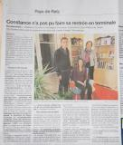
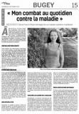

Accueil > Actualités
<< Retour à la liste
Témoignage de Céline-Ouest France
Atteinte de fatigue chronique, elle veut témoigner
Atteinte de fatigue chronique
Témoignage de Stéphanie
" La fatigue chronique ce mal encore méconnu"
la fatigue chronique ce mal encore méconnu
03/02/2019 LA DEPECHE Témoignage . Myriam souffre d'EM/SFC. Elle raconte son histoire et partage les difficultés qu'elle rencontre dans son quotidien à vivre avec cette maladie.
témoignage de Myriam 3 février 2019
Myriam - le moindre effort se traduit par des journées alitées
14/01/2019
ACTU - PRESSE ETATS UNIS/FRANCE : Robert Schenk (Président de l'ASFC) et le Pr De Korwin (Président du Conseil Scientifique de l'ASFC) ont été interviewés par un journaliste du Figaro suite à un communiqué de presse du centre médical universitaire de Georgetown relatif à la prise en charge des malades atteints du syndrome de fatigue chronique.
L'article est à paraître ce jour dans le Figaro version papier : http://www.lefigaro.fr/…/01008-20190114ARTFIG00132-fatigue-…
Figaro 14.01.19 les SFC aux Urgences
08/01/2019 " we are patients"
Témoignage de Pauline
" Ma volonté me fait tenir "
Pauline -ma volonté me fait tenir
19.12.18-Courrier du pays de Retz
Constance se bat contre la maladie
constance se bat contre la maladie
01.12.18"Constance n'a pas pu faire sa rentrée en terminale"
ouest france
Pauline -ma volonté me fait tenir
01.12.18https://www.ouest-france.fr/pays-de-la-loire/port-saint-pere-44710/constance-n-pas-pu-faire-sa-rentree-en-terminale-6102700
Atteinte du Syndrome de fatigue chronique, la jeune Port-Saint-Périne de 16 ans n'a d'autres choix que de préserver son tout petit capital énergie. Témoignage.
Été 2016, Constance Philibert, qui habite à Port-Saint-Père développe une mononucléose, une maladie où normalement les symptômes s'évanouissent au bout de quelques mois. Pourtant, 6 mois après, ses parents s' inquiètent de voir leur fille toujours épuisée.........
23/11/2018
Nouvel article dans le magazine " Femme Actuelle" le 23/11/2018
Article Femme Actuelle du 23
https://www.femmeactuelle.fr/sante/sante-pratique/syndrome-de-fatigue-chronique-comment-savoir-si-jen-souffre-2072025
22/11/2018
Témoignage d'Emilie dans La Nouvelle République/Blois
Au-delà de sa maladie Emilie se bat pour exister
Emilie se bat pour la maladie
13/11/2018
Témoignage de Julia dans l' Essor Savoyard du 25/10/2018
/Témoignage Julia -l'Essor Savoyard
le 29 Octobre 2018
Fatigue Chronique: simple syndrome ou vraie maladie ?
figaro du 29.10.18 JDK
Jérôme se bat pour la reconnaissance de sa maladie le SFC/EM.
Voici son témoignage sur Oxygène Radio, une radio régionale
Mayenne/Maine-et-Loire.
Oxygène radio
le 15 Octobre 2018
Article sur « Réponse à tout »
Ambre est tombée de fatigue
L'adolescente souffre du syndrome de fatigue chronique, une maladie
orpheline, pour l'instant incurable. Elle a dû arrêter sa scolarité
pendant un an pour essayer d'aller mieux.
Témoignage de Ambre
code=SHARE7OF&mode=share&utm_source=partage&utm_medium=lien&utm_campaign=of-journal&utm_content=partage-article&art=https://journal-twipe.ouest-france.fr/data/36843/reader/reader.html#!preferred/0/package/36843/pub/53467/page/10/alb/2007238
le 9 octobre 2018
A Genève a eu lieu la projection d'UNREST, film de Jennifer Brea sur l'EM/SFC.
Retrouvez la vidéo de la discussion qui a suivi la projection du film avec :
- Dr Grégoire Cozon, praticien hospitalier CHU Lyon, spécialiste de EM/SFC
- Alexandra Heumber, Head of International Advocacy, International Alliance for ME
- Dr Protazy Rejmer, représentant de l'Association Suisse contre l'EM/SFC - Verein ME/CFS Schweiz
Projection d' Unrest à Genève
le 08 Octobre 2018
Interview de Julia
Interview france bleu julia
ouest france
Robert Schenk, Président et le Pr de Korwin, Président du CS, ont été interviewés
Pour 66 millions d' impatients
Interview Président ASFC- Pr de Korwinhttp://www.66millionsdimpatients.org/syndrome-de-fatigue-chronique-une-maladie-a-part-entiere/
Céline témoigne de son combat contre l' EM/SFC
le 30/08/2018
Témoignage CHU D' Angers
Le Perche publie un article sur l'EM/SFC, plus précisement un témoignage de patient.
témoignage ouest france Céline
Vous l'attendiez, la voici enfin: la vidéo de la table ronde du 27 mai
dans son intégralité. Avec en prime, des petits extraits musicaux de
MORS et Catham:
lien vidéo table ronde 27 mai 2018
<< Retour à la liste
CONSULTEZ " NOTRE ACTU PRESSE"
Témoignage de Céline-Ouest France
Atteinte de fatigue chronique, elle veut témoigner
Atteinte de fatigue chronique
Témoignage de Stéphanie
" La fatigue chronique ce mal encore méconnu"
la fatigue chronique ce mal encore méconnu
03/02/2019 LA DEPECHE Témoignage . Myriam souffre d'EM/SFC. Elle raconte son histoire et partage les difficultés qu'elle rencontre dans son quotidien à vivre avec cette maladie.
témoignage de Myriam 3 février 2019
Myriam - le moindre effort se traduit par des journées alitées
14/01/2019
ACTU - PRESSE ETATS UNIS/FRANCE : Robert Schenk (Président de l'ASFC) et le Pr De Korwin (Président du Conseil Scientifique de l'ASFC) ont été interviewés par un journaliste du Figaro suite à un communiqué de presse du centre médical universitaire de Georgetown relatif à la prise en charge des malades atteints du syndrome de fatigue chronique.
L'article est à paraître ce jour dans le Figaro version papier : http://www.lefigaro.fr/…/01008-20190114ARTFIG00132-fatigue-…
Figaro 14.01.19 les SFC aux Urgences
08/01/2019 " we are patients"
Témoignage de Pauline
" Ma volonté me fait tenir "
Pauline -ma volonté me fait tenir
19.12.18-Courrier du pays de Retz
Constance se bat contre la maladie
constance se bat contre la maladie
01.12.18"Constance n'a pas pu faire sa rentrée en terminale"
ouest france
Pauline -ma volonté me fait tenir
01.12.18https://www.ouest-france.fr/pays-de-la-loire/port-saint-pere-44710/constance-n-pas-pu-faire-sa-rentree-en-terminale-6102700
Atteinte du Syndrome de fatigue chronique, la jeune Port-Saint-Périne de 16 ans n'a d'autres choix que de préserver son tout petit capital énergie. Témoignage.
Été 2016, Constance Philibert, qui habite à Port-Saint-Père développe une mononucléose, une maladie où normalement les symptômes s'évanouissent au bout de quelques mois. Pourtant, 6 mois après, ses parents s' inquiètent de voir leur fille toujours épuisée.........

23/11/2018
Nouvel article dans le magazine " Femme Actuelle" le 23/11/2018
Article Femme Actuelle du 23
https://www.femmeactuelle.fr/sante/sante-pratique/syndrome-de-fatigue-chronique-comment-savoir-si-jen-souffre-2072025
22/11/2018
Témoignage d'Emilie dans La Nouvelle République/Blois
Au-delà de sa maladie Emilie se bat pour exister
Emilie se bat pour la maladie
13/11/2018
Témoignage de Julia dans l' Essor Savoyard du 25/10/2018
/Témoignage Julia -l'Essor Savoyard
le 29 Octobre 2018
Fatigue Chronique: simple syndrome ou vraie maladie ?
figaro du 29.10.18 JDK
§§§§§§§§§§§§§§§§§
Jérôme se bat pour la reconnaissance de sa maladie le SFC/EM.
Voici son témoignage sur Oxygène Radio, une radio régionale
Mayenne/Maine-et-Loire.
Oxygène radio
§§§§§§§§§§§§§§§§§
le 15 Octobre 2018
Article sur « Réponse à tout »
§§§§§§§§§§§§§§§§§
Ambre est tombée de fatigue
L'adolescente souffre du syndrome de fatigue chronique, une maladie
orpheline, pour l'instant incurable. Elle a dû arrêter sa scolarité
pendant un an pour essayer d'aller mieux.
Témoignage de Ambre
§§§§§§§§§§§§§§§§§
code=SHARE7OF&mode=share&utm_source=partage&utm_medium=lien&utm_campaign=of-journal&utm_content=partage-article&art=https://journal-twipe.ouest-france.fr/data/36843/reader/reader.html#!preferred/0/package/36843/pub/53467/page/10/alb/2007238
§§§§§§§§§§§§§§§§§
le 9 octobre 2018
A Genève a eu lieu la projection d'UNREST, film de Jennifer Brea sur l'EM/SFC.
Retrouvez la vidéo de la discussion qui a suivi la projection du film avec :
- Dr Grégoire Cozon, praticien hospitalier CHU Lyon, spécialiste de EM/SFC
- Alexandra Heumber, Head of International Advocacy, International Alliance for ME
- Dr Protazy Rejmer, représentant de l'Association Suisse contre l'EM/SFC - Verein ME/CFS Schweiz
Projection d' Unrest à Genève
§§§§§§§§§§§§§§§§§
le 08 Octobre 2018
Interview de Julia
Interview france bleu julia
§§§§§§§§§§§§§§§§§
ouest france
§§§§§§§§§§§§§§§§§
Robert Schenk, Président et le Pr de Korwin, Président du CS, ont été interviewés
Pour 66 millions d' impatients
Interview Président ASFC- Pr de Korwinhttp://www.66millionsdimpatients.org/syndrome-de-fatigue-chronique-une-maladie-a-part-entiere/
§§§§§§§§§§§§§§§§§
Céline témoigne de son combat contre l' EM/SFC

§§§§§§§§§§§§§§§§§
le 30/08/2018
Témoignage CHU D' Angers
§§§§§§§§§§§§§§§§§
Le Perche publie un article sur l'EM/SFC, plus précisement un témoignage de patient.
témoignage ouest france Céline
§§§§§§§§§§§§§§§§§
Vous l'attendiez, la voici enfin: la vidéo de la table ronde du 27 mai
dans son intégralité. Avec en prime, des petits extraits musicaux de
MORS et Catham:
lien vidéo table ronde 27 mai 2018
<< Retour à la liste
Qui sommes-nous ?
Pacing
Le SFC, la maladie
La douleur chronique
Adhésion & Contact
Faire un don
Accueil téléphonique
Accueil en régions
Documentation
Démarches administ.
Agenda

- inserm.fr/actualites/ru
- alliance-maladies-rares
- eurordis.org
- orpha.net/consor/cgi-bi
- maladiesraresinfo.org
- plateforme-maladiesrare
- has-sante.fr
- fnath.org
- france-assos-sante.org/
- sfr.larhumatologie.fr
- hemochromatose.fr
- association-afvd.com/
- afgs-syndromes-secs.org
- droitsdesmalades.fr/
- sante.gouv.fr
- phoenixrising.me
- investinme.org
- iacfsme.org/
- solvecfs.org/
- meassociation.org.uk/
- https://aqem.org
 Ce site respecte les
principes de la charte HONcode.
Ce site respecte les
principes de la charte HONcode.
Vérifiez ici.
Dernière mise à jour le 20/06/2012
Copyright ASFC ©2012-2026 mentions légales - Réalisé par OPALE WEB - OPALIS'TIC